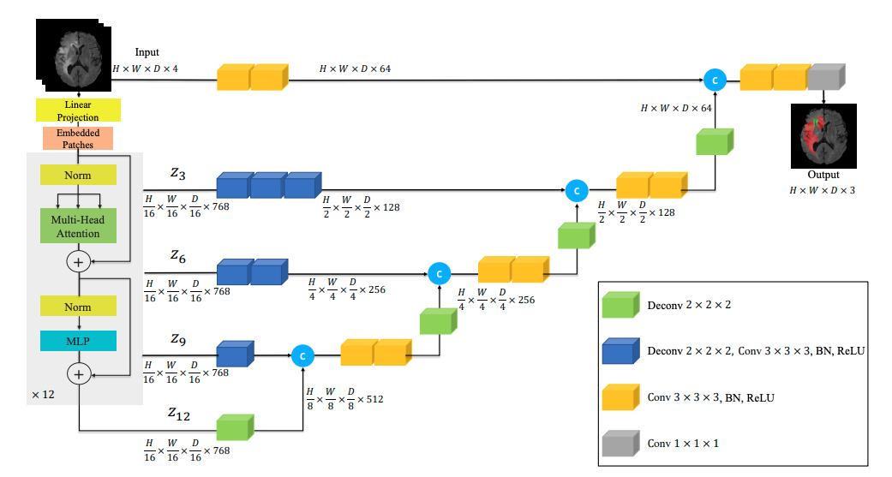
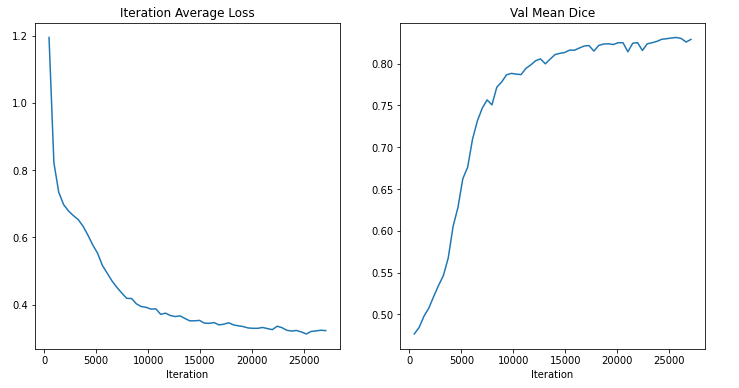
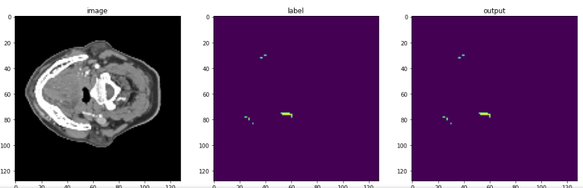
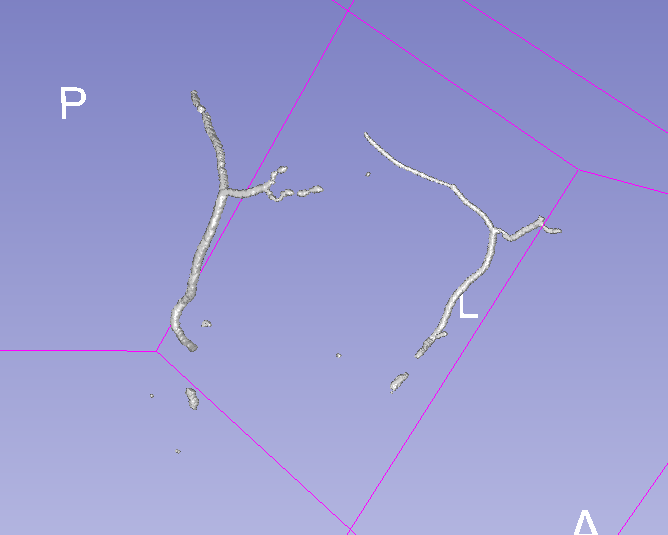
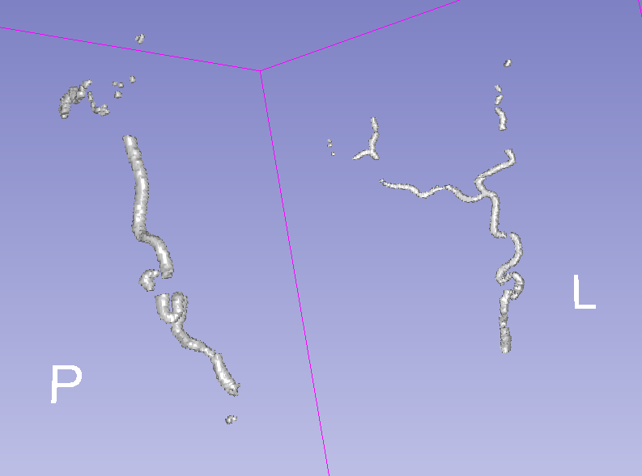

3D Artery Segmentation
2021-2022Facial and temporal artery segmentation in CT volumes with 3D deep neural networks and ensemble learning. The main vision of this project was to help surgeons in better planning of the surgery procedure, by integrating this model into our existing XR surgery solution.
During this research, I got to learn about the various challenges involved in applying machine learning to the medical domain. To name a few, there were challenges related to data scarcity, data labeling, class imbalance, model generalization and so on.
In the end, I also demonstrate how ensembling multiple high-recall models can help in improving the quality of our machine learning algorithm on medical data.
- Repository
- GitHub Repository
- Documentation
- Project Log
- Manual
- Labeling Manual
- Platform
- Ubuntu / Unity3D / iOS
- Stack
- PyTorch, TorchIO, MONAI, Python, 3D Slicer




